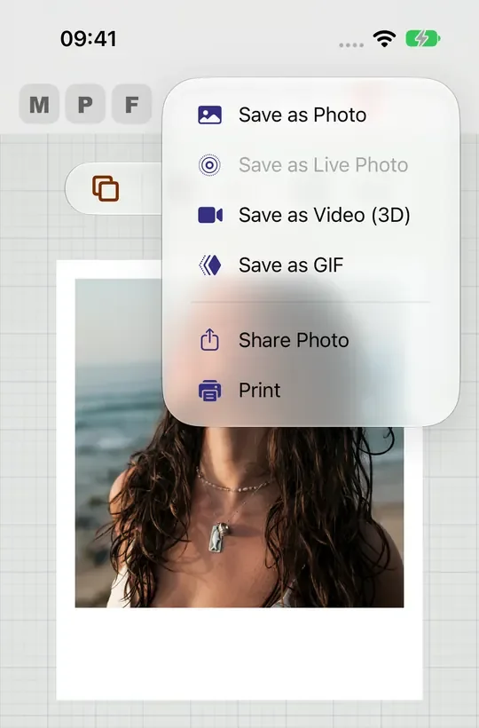

Quality
Low, Medium, High or Max in Hub → Saving Photos. A video, GIF or Live Photo can pick its own quality and shows the file size first.
A common frustration with photo editors is that the saved file does not look like the preview: the crop shifts, text moves, quality drops. Export here is not a screenshot of the editor, it is the same composition replayed at delivery quality.

What you see while editing and the file you save are drawn from the same instructions: the same crop, the same frame, the same layers in the same order. Only the size changes, so nothing shifts, moves or goes soft on the way out.
All six are under Export in the editor.
Low, Medium, High or Max in Hub → Saving Photos. A video, GIF or Live Photo can pick its own quality and shows the file size first.
Pick a paper such as 4x6 or 8x10 and the photo saves at 300 dots per inch for it. An 8x10 is 2,400 x 3,000 pixels.
Choose Transparent as the Background Fill in Frame → Print & Shape, and the photo saves as a PNG you can place on anything.
The app draws a new picture, so the camera settings, lens and GPS location of your original never travel inside the saved file. The original date and place are kept beside it in Photos only if you turn on Keep Original Photo Details, which is off unless you choose it.
How saving is specified and checked: the four steps it runs, the rules for each format, and the acceptance criteria the tests hold it to.
Confirm a usable document, then capture synchronized document, profile and canvas state.
Open the best available full-quality source for this scoped render operation.
Rebuild required AI and decor assets, apply shared geometry and assemble final pixels.
Choose format, apply the chosen quality or print size and the metadata privacy rules, then save or share the result.
The promise, as the specification states it:
Usually because the preview and the export are drawn by different code paths at different resolutions. Max Photo Frames renders both from one shared geometry contract, so positions, crop and layer order stay identical.
Camera settings, lens and GPS location never travel inside the saved file: the app draws a new image, so the original photo’s details are not carried over. The original date and location are stored beside the saved photo in your Photos library only if you turn on Hub → Saving Photos → Keep Original Photo Details, which is off by default. A saved video or GIF keeps the photo’s capture date in Photos either way, and Save with Current Date uses today’s date instead. Camera numbers appear on the picture itself only if you placed a camera settings caption there.
You choose one of four levels in Hub → Saving Photos → Quality: Low (1080 px), Medium (2048 px), High (4096 px, the everyday default) or Max (as much of the photo’s own detail as the device can keep). A framed or captioned design is saved at the design’s size, so the frame, words and logo stay sharp; a plain photo is never enlarged beyond its own size. With a print size chosen, the photo saves for that paper at 300 dots per inch, so an 8x10 is 2,400 x 3,000 pixels, and Frame → Print & Shape tells you what your photo will give on that paper. When AI subject effects are active the output has a practical ceiling, and the quality picker states this rather than quietly downscaling.